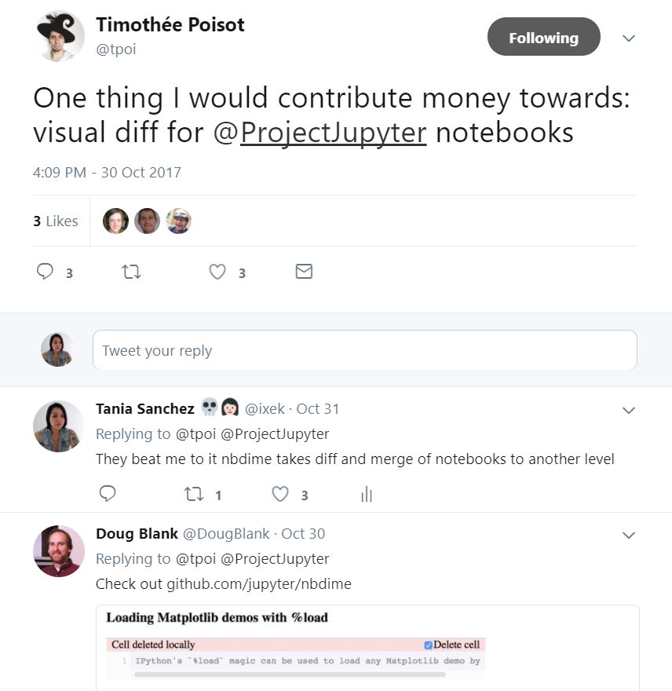

A successful 2nd RSE conference
RSE Sheffield in the 2nd RSE conference

The second RSE conference took place on the 7th and 8th of September 2017 at the Museum of Science and Industry MOSI. There were over 200 attendees, 40 talks, 15 workshops, 3 keynote talks, one of which was given by our very own head honcho Mike Croucher (slides here), and geeky chats galore.
RSE team members Mozhgan and Tania were involved in the organising committee as talks co-chairs and diversity chair (disclose: they had nothing to do with Mike's keynote). Also, all of the RSE Sheffield team members made it to the conference, which seems to be a first due to the diverse commitments and project involvement of all of us.
Once again, the event was a huge success thanks to the efforts of the committee and volunteers as well as the amazing RSE community that made this a en engaging and welcoming event.
Conference highlights
With so many parallel sessions, workshops, and chats happening all at the same time it is quite complicated to keep a track of every single thing going on. And it seems rather unlikely that this will change over time as it was evident that the RSE community has outgrown the current conference size. So we decided to highlight our favourites of the event:
-
The talk on 'Imposter syndrome' by Vijay Sharma: Who in the scientific community has not ever experienced this? Exactly! So when given the chance everyone jumped into this talk full of relatable stories and handy tips on how to get over it.
-
Another talk that seemed to have gathered loads of interest was that of Toby Hodges from EMBL on community building. This came as no surprise (at least to me) as RSEs often act as community builders or as a bridge between collaborating communities. Opposed to just being focused on developing software and pushing it into production.
-
During the first day the RSEs had the chance to have a go at interacting with the Microsoft Hololens. There was a considerable queue to have a go at this, and unfortunately, we were not among the chosen ones to play with this. Maybe in the future.
-
My hands-on workshop on 'Jupyter notebooks for reproducible research'. I was ecstatic to know the community found this workshop interesting and had to run this twice!!!
-
Also, I'd like to casually throw in here that I have been elected as a committee member for the UK RSE association, so expect to read more about this in this blog.
For obvious reasons I missed most of the workshops but Kenji Takeda's workshop on 'Learn how to become an AI Super-RSE' was another favourite of the delegates as this was run twice too!
Our workshop on Jupyter notebooks for reproducible research
Being a RSE means that I serve as an advocate of sustainable software development. Also, as I have discussed here before: I am greatly concerned about reproducibility and replicability in science. Which, I might add, is not an easy task to embark onto. Thankfully, there are loads of tools and practices that we can adopt as part of our workflows to ensure that the code we develop is done by following the best practices possible, and as a consequence, can support science accordingly.
Naturally, as members of the community come up with more refined and powerful tools in the realm of scientific computing we (the users and other developers) adopt some of those tools meaning that we often end up modifying our workflows.
Such is the case of Jupyter notebooks. They brought up to life a whole new era of literate programming: where scientist, students, data scientist, and aficionados can share their scripts in a human readable format. What is more important, they transform scripts into a conveying scientific narrative where functions and loops are followed by their graphical outputs or allow the user to interact via widgets. This ability to openly share whole analysis pipelines is for sure, a step in the right direction.
However, the adoption of tools like this brings not only a number of advantages but also presents a number of challenges and integration issues with previously developed tools. For example, the traditional version control tools (including diff and merge tools) do not play nicely with the notebooks. Also, the notebooks have to be tested as any other piece of code.
During the workshop, I introduced two tools: nbdime and nbval, which were developed as part of the European funded project: OpenDreamKit. Such tools introduce very much needed version control and validation capabilities to the Jupyter notebooks, addressing some of the issues mentioned before.
So in order to cover these tools as well as how you would integrate them within your workflow I divided the workshop in three parts: diffing and merging of the notebooks, notebooks validation, and a brief 101 on reproducibility practices.
Notebooks diffing and merging
During the first part of the workshop the attendees shared their experiences using traditional version control tools with Jupyter notebooks... unsurprisingly everyone had had terrible experiences.
Then all of them had some hands-on time on how to use nbdime for diffing and merging from the command line as well as from their rich html rendered version (completely offline). As we progressed with the tutorial I could see some happy faces around the room and they all agreed that this was much needed.
Need more convincing? This tweet showed up in my feed just this week And just earlier this week this tweet showed up on my feed: 
Notebooks validation
The second part of the workshop focused on the validation of the notebooks. And here I would like to ask this first: 'How many of you have found an amazing notebook somewhere in the web just to clone it and find out that it just does not work: dependencies are broken, functions are deprecated, can't tell if the results are reproducible?
I can tell you, we have all been there. And in such cases nbval is your best friend. It is a py.test plugin to determine whether execution of the stored inputs match the stored outputs of the .ipynb file. Whilst also ensuring that the notebooks are running without errors.
This lead to an incredible discussion on its place within conventional testing approaches. Certainly, it does not replace unittesting or integration testing, but it could be seen as a form of regression testing for the notebooks. Want to make sure that your awesome documentation formed by Jupyter notebooks is still working in a few months time? Why not use CI and nbval?
Wrapping up
The closing to the workshop was a 101 on working towards reproducible scientific computing. We shared some of our approaches for reproducible workflows and encouraged the delegates to share theirs. We covered topics such as valuing your digital assets, licensing, automation, version control and continuous integration, among others.
The perfect close to a great RSE conference!
Just a few more things
Let me highlight that all the materials for the workshop can be found at: https://github.com/trallard/JNB_reproducible and that all of it is completely self contained in the form of a Docker container.
If you missed out on the conference and would like to see the videos and slides of the various talks do not forget to visit the RSE conference website.